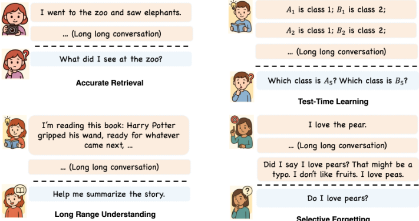
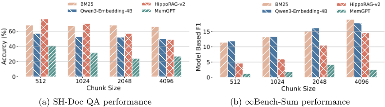
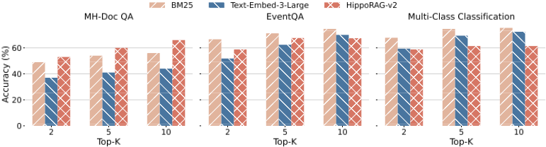

通过增量多轮交互评测 LLM Agent 的记忆能力（MemoryAgentBench）
论文针对现有 LLM Agent 评测只关注推理、规划与执行，而忽视记忆（存储、更新、检索长期信息）能力的问题，基于记忆科学与认知科学经典理论提出四项核心能力：Accurate Retrieval、Test-Time Learning、Long-Range Understanding、Selective Forgetting，并构建统一基准 MemoryAgentBench。方法上将既有长上下文数据集切分重构为按时间顺序增量注入的多轮对话格式，并新增 EventQA 与 FactConsolidation 两个数据集，在统一协议下评测 Long-Context、RAG（Simple/Embedding/Structure-Augmented）与 Agentic Memory（Self-RAG、MemGPT、MIRIX 等）三类架构。关键结论：RAG 方法在精确检索任务上占优，长上下文模型在 TTL 与 LRU 上表现最佳，而所有方法在选择性遗忘多跳任务上最高仅 28% 准确率，且论文证明该能力无法靠提示工程弥补、需要专门的记忆机制设计。对团队而言，该基准可直接用于知识库问答与长期运行 Agent 的记忆方案选型与回归评测。
现有 LLM Agent 基准几乎只评测推理、规划与执行能力，对 Agent 记忆机制（如何记忆、更新、检索长期信息）缺乏系统评测；已有长上下文基准一次性提供全部上下文，无法反映记忆 Agent 增量吸收、抽象与整合信息的多轮交互特性，且没有任何已有基准同时覆盖四项核心记忆能力。
提出 MemoryAgentBench：(1) 基于记忆/认知科学定义四项能力维度 AR/TTL/LRU/SF；(2) 将长上下文数据集（NIAH 式 Doc QA、LongMemEval、∞-Bench 等）切分为 chunk 并包装成带记忆指令的 User-Assistant 对话，按时间顺序增量喂给 Agent，统一为 chunks-questions-answers 格式；(3) 新建两个数据集：EventQA（全自动流水线构造的小说事件时序 6 选 1 推理）与 FactConsolidation（基于 MQUAKE 反事实编辑对构造 6K/32K/64K/262K 长度的事实更新与冲突消解场景）；(4) 统一评测三类记忆 Agent：Long-Context Agents（FIFO 上下文缓冲）、RAG Agents（BM25/Embedding/GraphRAG/RAPTOR/HippoRAG-v2/Mem0/Cognee/Zep 等）、Agentic Memory Agents（Self-RAG/MemGPT/MIRIX），并开展 chunk size、检索 top-k、骨干模型、成本-性能与 overwrite 策略等消融实验。
所有方法在 FactConsolidation 多跳（MH）选择性遗忘任务上均失败，最高仅达到 28% 准确率；只有 Long-Context Agents 在单跳场景取得相对合理的结果
推理模型 o4-mini 在 6K 版本 FactCon-MH 上达到 80.0 分，但上下文增至 32K 时骤降至 14.0，说明数据集在短上下文下可解、瓶颈在长程推理能力
零样本设置下各主流 LLM 在 TTL 任务上准确率低于 4%，而 GPT-4o-mini 在完整记忆设置下达到 48.6%，绝对提升 45.2 个百分点，验证基准测的是从交互历史学习而非预训练知识
RAG Agents 在 Accurate Retrieval 类任务上普遍优于骨干模型 GPT-4o-mini；Long-Context 模型在 TTL 与 LRU 上取得最佳成绩
chunk size 消融：更小的 chunk 与更多检索调用提升 AR 任务表现，但会损害 LRU 任务；增大检索 top-k（2→5→10）普遍提升多数任务表现
骨干模型消融：对 RAG Agents，升级到 GPT-4.1-mini 仅带来边际提升；对 MIRIX 等 Agentic Memory 方法，更强骨干带来显著性能增益
显式 overwrite 提示策略消融表明 Selective Forgetting 无法仅靠提示工程解决，需要专门的记忆机制设计
延迟与资源分析：更小 chunk size 使记忆构建耗时显著增加，Mem0、Cognee、MIRIX 在记忆构建阶段需要极高资源
相对已有工作的区别：(1) 首个系统性覆盖 AR/TTL/LRU/SF 四项记忆能力的统一 memory agent 基准，而 LOCOMO、LongMemEval 等先前基准要么对话过短、要么主题多样性不足、要么覆盖不全；(2) 评测范式上把静态长上下文数据集重构为增量多轮交互格式，区分了'记忆'（压缩、蒸馏、选择性提取）与'长上下文'（逐字保留）的本质差异；(3) 新增 EventQA 与 FactConsolidation 分别针对时序事件推理与事实更新/选择性遗忘，后者是先前基准普遍缺失的维度；(4) 在同一协议下横向对比 Long-Context、RAG、Agentic Memory 三大架构族及商业记忆系统（MemGPT、MIRIX 等），并附成本-性能与算力匹配分析。
相关度级别：high
命中能力域：3.1 上下文工程与记忆 | 3.5 评测与可靠使用
理由：论文直接命中团队两个核心能力域：其一，3.1 上下文工程与记忆——论文研究的正是 Agent 记忆系统（文本历史、外部数据库、RAG、agentic memory loop），评测对象包括团队可能直接采用的 Mem0、Cognee、Zep、MemGPT、MIRIX 等开源/商业记忆组件，并给出 chunk size、top-k 等可直接指导 RAG 管线调参的结论；其二，3.5 评测与可靠使用——论文本身就是一个 Agent 应用评测基准，包含成本-性能分析、LLM-as-a-judge 有效性验证与统一评测协议，与团队'产出质量与可靠性的评测保障'职责完全对口。团队构建知识库问答、代码审查助手等长期运行 Agent 时，记忆更新与过期信息冲突（Selective Forgetting）是真实痛点，该基准提供了现成的度量工具。
建议动作：深入精读并做内部分享
arXiv:2507.05257v4 [cs.CL] 2026年6月28日
通过增量式多轮交互评估大语言模型（LLM）Agent 的记忆能力
Yuanzhe Hu ∗ † *†, Yu Wang*†, Julian McAuley
加州大学圣地亚哥分校 {yuh127, yuw164, jmcauley}@ucsd.edu
数据集 源代码 0
近年来针对大语言模型（Large Language Model, LLM）Agent 的基准测试（benchmark）主要聚焦于评估推理、规划与执行能力，而另一个关键组件——记忆（memory），即 Agent 如何记忆、更新和检索长期信息——却因缺乏基准测试而未得到充分评估。我们将具备记忆机制的 Agent 称为记忆 Agent（memory agent）。本文基于记忆科学与认知科学中的经典理论，归纳出记忆 Agent 必备的四项核心能力：准确检索（accurate retrieval）、测试时学习（test-time learning）、长程理解（long-range understanding）与选择性遗忘（selective forgetting）。现有基准测试要么依赖于有限的上下文长度，要么专为基于书籍问答（book-based QA）等静态长上下文场景而设计，无法反映记忆 Agent 增量式积累信息的交互式多轮特性；此外，目前尚无基准测试能够覆盖全部四项能力。我们提出了 MemoryAgentBench，一个专为记忆 Agent 设计的新基准测试。该基准测试将现有长上下文数据集加以改造，并纳入新构建的数据集，统一转化为多轮格式，从而有效模拟记忆 Agent 增量式信息处理的特性。通过精心筛选与整理数据集，我们的基准测试全面覆盖了上述四项核心记忆能力，为评估记忆质量提供了一个系统且具有挑战性的测试平台。我们评估了多种多样的记忆 Agent，涵盖从简单的基于上下文的系统与检索增强生成（RAG）系统，到配备外部记忆模块与工具集成的高级 Agent。实证结果表明，现有方法尚无法全面掌握这四项能力，这凸显了针对 LLM Agent 的综合记忆机制开展进一步研究的必要性。
大语言模型（LLM）Agent 已迅速从概念验证型的聊天机器人演变为端到端系统，能够编写软件（Wang et al., 2024c）、控制浏览器（Müller & Žunič, 2024）并对多模态输入进行推理。Manus、OWL（Hu et al., 2025）、OpenHands（Wang et al., 2024c）和 Codex 等框架已能常规性地解决复杂且工具密集的任务，并在 GAIA（Mialon et al., 2023）和 SWE-Bench（Jimenez et al., 2023）等智能体基准测试上取得最先进的结果。然而，这些评估几乎完全聚焦于推理（规划、工具使用、代码合成），而对同样重要的记忆问题（抽象、存储、更新、检索）的探索在很大程度上仍显不足。近年来以记忆为中心的架构——从 MemoryLLM（Wang et al., 2024d）、SELF-PARAM（Wang et al.）和 M+（Wang et al., 2025）等参数化记忆系统，到 MemGPT（Packer et al., 2023; Lin et al., 2025）、Mem0（Chhikara et al., 2025）、Selective Forgetting Cognee（Markovic et al., 2025）、Zep（Rasmussen et al., 2025）和 MIRIX（Wang & Chen, 2025）等商业化的 token 级记忆解决方案——采用了多种多样的策略来存储和检索历史信息。尽管关注度日益增长，它们在真实场景中的有效性仍主要停留在个案经验层面，目前也尚无统一的基准测试来系统性地评估 Agent 记忆的质量。在本文中，我们将配备了记忆机制的 Agent 称为记忆 Agent（Memory Agent），其中记忆可以采取多种形式，包括参数、向量、文本历史或外部数据库。在本文中，我们主要关注利用文本历史和外部数据库的记忆 Agent，因为这些方法在实际应用中的部署最为普遍。相比之下，编码在模型参数中的记忆（Wang et al., 2024d; 2025; Yin et al., 2024）在很大程度上仍局限于学术研究，且其能力通常不及闭源 API 模型所配备的专有记忆系统。
∗ 这些作者对本工作贡献相同。
† 共同通讯作者。
1

基于记忆与认知科学中的一些经典理论（James, 1890; McClelland et al., 1995; Anderson & Neely, 1996; Wimber et al., 2015），我们确定了四项互补的能力（示例见图 1）来评估记忆 Agent：（1）准确检索（Accurate Retrieval, AR）：针对查询提取正确片段的能力。这可以涉及单跳或多跳检索，只要相关信息能够通过单次查询获取即可。（2）测试时学习（Test-Time Learning, TTL）：在部署过程中无需额外训练即可纳入新行为或习得新技能的能力。（3）长程理解（Long-Range Understanding, LRU）：整合分布于超长上下文（≥ 100k tokens）中的信息，并回答需要对整个序列进行全局理解的问题的能力。（4）选择性遗忘（Selective Forgetting, SF）：在面对矛盾证据时修订、覆盖或删除先前存储信息的技能，这与模型编辑和知识遗忘（knowledge unlearning）任务的目标相一致（Meng et al., 2023; Wang et al., 2024e）。对于这四项能力，我们在附录 B 中提供了更详细的定义。
先前为评估语言模型记忆能力而开发的数据集存在明显的局限性。早期基准测试（benchmark）如 LOCOMO (Maharana et al., 2024)（约 9k tokens）、LooGLE (Li et al., 2023)（约 24k tokens）和 LongBench (Bai et al., 2023)（约 20k tokens）的上下文相对较短，已无法对当前模型构成挑战。而较新的数据集，如 NovelQA (Wang et al., 2024a)（约 200k tokens）、NOCHA (Karpinska et al., 2024)（约 127k tokens）、Loong (Wang et al., 2024b)（约 100k tokens）以及 ∞-Bench (Zhang et al., 2024)（约 150k tokens），则将上下文长度进一步扩展，以评估全局推理与检索能力。然而，这些数据集主要是为评估长上下文语言模型而设计的，而非面向记忆 Agent。长上下文基准测试之所以不能直接用于评估记忆 Agent，原因如下。记忆与长上下文之间存在本质区别：记忆是对过往信息进行压缩与提炼后得到的表征。记忆并非逐字存储所有历史内容，而是有选择地提取关键细节、剔除无关信息，并且往往融入由先前经验推导出的新推断。因此，记忆 Agent 被设计为以增量方式处理上下文——逐段吸收输入、随时间推移对信息进行抽象与整合、生成新的推断，并从积累的历史中学习新规则。正因如此，将全部上下文以单一整体形式提供的数据集并不适用于评估记忆 Agent。较新的一项工作 LongMemEval (Wu et al., 2025) 试图通过使用合成的长篇对话来弥补这一局限，此类对话可按会话逐次注入记忆。尽管如此，其评估框架仍受限于话题多样性不足以及交互模式不够真实，这降低了其在真实世界记忆 Agent 场景中的适用性。
为应对这些局限性，我们提出了一个统一的基准测试 MemoryAgentBench，专门用于评估 Agent 系统中广泛多样的记忆机制。我们还提供了一个用于记忆 Agent 评估的框架。在该框架中，Agent 会接收到一系列文本输入，这些输入模拟了与用户的多轮交互。我们对最初为长上下文 LLM 评估而开发的现有数据集进行了重构，将输入切分并重组为多个对话片段，并按时间顺序增量地提供给 Agent。然而，由于这些数据集并未完全涵盖全部四项目标记忆能力，我们还引入了两个新数据集：EventQA 和 FactConsolidation，分别用于评估精确检索与选择性遗忘。我们的基准测试涵盖了对最先进的商用记忆 Agent（例如 MIRIX 和 MemGPT）、将完整输入视为记忆的长上下文 Agent，以及通过检索方法扩展自身记忆的 RAG Agent 的评估。我们考察了为长上下文模型和 RAG 开发的技术如何迁移到记忆 Agent 设定中。通过为多样化的 Agent 架构和数据集提供一致的评估协议，MemoryAgentBench 能够全面洞察 Agent 在四项核心记忆能力上的表现。在表 1 中，我们将 MemoryAgentBench 与以往具有代表性的基准测试在多个维度上进行了比较。
我们的主要贡献总结如下：
在本节中，我们回顾了有关评估基准测试的已有工作，并将其划分为三个领域：长上下文理解、检索增强生成（RAG）以及记忆 Agent。面向长上下文 LLM 的基准测试。早期为长上下文评估设计的基准测试包括 LongBench（Bai et al., 2023）和 LooGLE（Li et al., 2023），其平均输入长度分别约为 20k 和 24k 个 token。较新的基准测试——例如 ∞-Bench（Zhang et al., 2024）、HELMET（Yen et al., 2024）、RULER（Hsieh et al., 2024）、NOCHA（Karpinska et al., 2024）、NoLiMa（Modarressi et al., 2025）以及 LongBench V2（Bai et al., 2024）——则将上下文长度扩展至超过 100k 个 token。尽管这些基准测试能够有效评估模型一次性处理海量信息的能力，但它们主要面向静态的长上下文阅读理解，并未体现记忆 Agent 所特有的增量式、多轮交互性质。
面向检索增强生成（RAG）的基准测试。除纯粹的长上下文评估之外，还有一系列基准测试针对面向知识密集型任务的检索增强生成（RAG），例如在固定语料库上进行的开放域问答（QA）、事实核查和文档排序，如 KILT（Petroni et al., 2021）和 BEIR（Thakur et al., 2021）。较新的工作则在长上下文或特定应用场景下显式评估端到端的 RAG 系统，包括 LaRA（Li et al.）、LONG 2 RAG（Qi et al., 2024）、FRAMES（Krishna et al., 2025）以及 CRUD-RAG（Lyu et al., 2025）。诸如 RAGBench（Friel et al., 2024）、RAGTruth（Niu et al., 2024）、FreshLLM（Vu et al., 2024）和 T 2 -RAGBench（Strich et al., 2025）等大规模基准测试进一步将评估空间分别扩展至工业手册、幻觉检测、时效敏感的网络问答以及文本与表格相结合的财务报告。然而，现有的 RAG 基准测试通常假设知识库是静态的或缓慢变化的，且交互持续时间较短，其侧重点在于检索准确性和依据性（grounding），而非记忆 Agent 所核心关注的对信息的持续更新与选择性遗忘。
3
| Benchmark. | #Q. | Context Depth. | Core Memory Competencies.AR | Core Memory Competencies.TTL | Core Memory Competencies.LRU | Core Memory Competencies.SF | Evaluation Coverage.LCA | Evaluation Coverage.RAG | Evaluation Coverage.AM |
|---|---|---|---|---|---|---|---|---|---|
| MemoryBank (Zhong et al., 2023a) | 194 | 5k | ✓ | ✓ | ✗ | ✗ | ✓ | ✗ | ✓ |
| LoCoMo (Maharana et al., 2024) | 7512 | 10k | ✓ | ✗ | ✗ | ✗ | ✓ | ✓ | ✗ |
| PerLTQA (Du et al., 2024) | 8593 | 1M* | ✓ | ✗ | ✗ | ✗ | ✓ | ✓ | ✗ |
| RealTalk (Lee et al., 2025) | 728 | 375k* | ✓ | ✗ | ✓ | ✗ | ✓ | ✗ | ✗ |
| LongMemEval (Wu et al., 2025) | 500 | 115k, 1.5M | ✓ | ✗ | ✗ | ✗ | ✓ | ✓ | ✗ |
| StoryBench (Wan & Ma, 2025) | 86 | - | ✓ | ✗ | ✓ | ✗ | ✓ | ✗ | ✗ |
| MemoryAgentBench | 2071 | 103k-1.44M | ✓ | ✓ | ✓ | ✓ | ✓ | ✓ | ✓ |
| Benchmark. | #Q. | Context Depth. | Core Memory Competencies.AR | Core Memory Competencies.TTL | Core Memory Competencies.LRU | Core Memory Competencies.SF | Evaluation Coverage.LCA | Evaluation Coverage.RAG | Evaluation Coverage.AM |
面向记忆 Agent 的基准测试。最近，一些专门用于评估记忆 Agent 的基准测试被相继提出，例如 LOCOMO（Maharana et al., 2024）、LongMemEval（Wu et al., 2025）、RealTalk（Lee et al., 2025）和 StoryBench（Wan & Ma, 2025）。尽管这些工作颇具前景，但 LOCOMO 的对话长度仍然相对较短（约 9k），而 LongMemEval 采用的是主题多样性有限的合成对话，这使得对话不够真实，可能也难以充分代表现实世界中的记忆应用场景。与此同时，上述基准测试的评估范围尚不足以全面评估四项核心能力——准确检索（Accurate Retrieval）、测试时学习（Test-Time Learning）、长程理解（Long-Range Understanding）和选择性遗忘（Selective Forgetting）——而这些能力对于构建鲁棒的记忆 Agent 至关重要。
记忆机制近来正受到越来越多的关注（Wang et al., 2025/02）。LLM 的最新进展已展示出处理扩展上下文长度的能力，范围从 10 万到超过 100 万个 token。例如，GPT4o（OpenAI, 2025b）和 Claude 3.7（Anthropic, 2025）等模型能够处理约 10 万至 20 万个 token 的输入，而 Gemini 2.0 Pro（DeepMind, 2025）和 GPT-4.1 系列等模型则将这一容量扩展至超过 100 万个 token。这些强大的长上下文能力使得一种简单而有效的记忆形式成为可能：将信息直接存储在上下文窗口中。然而，这种方法本质上受到一个硬性限制的约束——一旦超出上下文窗口，较早的信息就必须被丢弃。
与此同时，检索增强生成（Retrieval-Augmented Generation, RAG）仍然是管理超长上下文的主导范式。通过从较早的上下文中检索相关信息并将其提供给大语言模型（LLM），RAG 使系统能够克服上下文长度的限制。例如，OpenAI 近期推出的记忆功能 1 将显式的用户偏好跟踪与引用先前交互的检索式方法相结合。RAG 方法大致可分为三类：简单 RAG（Simple RAG）：这类方法依赖 TF-IDF、BM25 (Robertson & Walker, 1994) 和 BMX (Li et al., 2024) 等字符串匹配技术，完全不涉及神经网络，基于字符串级别的相似度运作。基于嵌入的 RAG（Embedding-based RAG）：这一类方法利用神经编码器（主要为 Transformer）将文本映射为稠密向量表示 (Wu et al., 2022)。早期方法如 DPR (Karpukhin et al., 2020) 和 Contriever (Izacard et al., 2021) 基于 BERT (Devlin et al., 2019)，而诸如 Qwen3-Embedding (Zhang et al., 2025) 等更新的模型则取得了显著提升的检索性能。结构增强 RAG（Structure-Augmented RAG）：这类方法利用图或树等结构化表示来增强检索。代表性系统包括 GraphRAG (Edge et al., 2024)、RAPTOR (Sarthi et al., 2024)、HippoRAG-V2 (Gutiérrez et al., 2025)、Cognee、Zep (Rasmussen et al., 2025)、MemoRAG (Qian et al., 2025)、Mem0 (Chhikara et al., 2025)、MemoryOS (Kang et al., 2025)、Memary (kingjulio8238 & Memary contributors, 2024) 以及 Memobase (memodb-io & Memobase contributors, 2025)。尽管行之有效，基于 RAG 的方法在处理模糊查询、多跳推理和长程理解方面仍面临挑战。当问题需要整合整个会话中的知识，或需要从编码技能的长输入中学习时，仅限于 top-k 个最相关段落的检索机制可能无法呈现出必要的信息。为了解决这些局限，Agentic Memory Agents（智能体式记忆 Agent）引入了一种迭代式、决策驱动的框架。这类 Agent 并不依赖单次检索，而是动态地处理查询、检索证据、进行反思，并在多轮检索与推理循环中不断迭代。代表性工作包括 MemGPT (Packer et al., 2023)、Self-RAG (Asai et al., 2023)、Auto-RAG (Yu et al., 2024)、A-MEM (Xu et al., 2025)、Mem1 (Zhou et al., 2025)、MemAgent (Yu et al., 2025) 以及 MIRIX (Wang & Chen, 2025)。这种智能体式设计在解决模糊或多步查询方面尤为有效。尽管如此，这些方法在根本上仍受制于 RAG 的固有局限——即无法充分理解或从仅靠检索无法访问的长程上下文中学习。
1 https://openai.com/index/memory-and-new-controls-for-chatgpt/
4
| Category | Dataset | Metrics | AvgL. | Description |
|---|---|---|---|---|
| Accurate Retrieval | SH-Doc QA MH-Doc QA LongMemEval (S*) EventQA | Accuracy | 197K 421K 355K 534K | Single-Hop Gold passage retrieval QA. Multiple-Hop Gold passage retrieval QA. Dialogues based QA. Novel multiple-choice QA on characters events. |
| Test-time Learning | BANKING77 CLINC150 NLU TREC Coarse TREC Fine Movie Recommendation | Accuracy Recall@5 | 103K 1.44M | Banking intent classification, 77 labels. Intent classification, 151 labels. Task intent classification, 68 labels. Question type classification, 6 labels. Question type classification, 50 labels. Recommend movies based on provided dialogues examples. |
| Long Range Understanding | ∞ Bench-Sum Detective QA | F1-Score Accuaracy | 172K 124K | Novel summarization with entity replacement. Long-range reasoning QA on detective novels. |
| Selective Forgetting | FactConsolidation-SH FactConsolidation-MH | Accuracy | 262K | Single hop reasoning in facts judgment. Multiple hop reasoning in facts judgment. |
| Category | Dataset | Metrics | AvgL. | Description |
长程理解（Long Range Understanding, LRU）数据集 我们通过两项任务来评估 LRU：(1) 小说摘要（Novel Summarization, Summ.）：我们采用 ∞-Bench（Zhang et al., 2024）中的摘要任务 En.Sum。要求智能体分析并梳理小说的情节与人物，然后撰写一篇 1000 至 1200 词的摘要。(2) 侦探问答（Detective QA, Det QA）：我们还基于 Detective QA（Xu et al., 2024）构建了一个困难问题集，其中包含十部小说与 71 个问题，这些问题要求智能体在更长的叙事范围内进行推理。
选择性遗忘（Selective Forgetting, SF）数据集 为了评估智能体能否遗忘过时的记忆并基于这些记忆进行推理，我们构建了一个名为 FactConsolidation 的新数据集。具体而言，我们使用来自 MQUAKE（Zhong et al., 2023b）的反事实编辑对（counterfactual edit pairs）构建该基准测试。每一对包含一个真实事实以及一个经过改写的矛盾版本。这些编辑对按顺序排列，使得改写后的（新）事实出现在原始事实之后，从而模拟真实的更新场景。我们将多个这样的编辑对拼接起来，构建长度为 6K、32K、64K、262K 的长上下文。随后，我们采用 MQUAKE 的原始问题，并将其归类为：(1) FactConsolidation-SH（Ours）（SH 表示 Single-Hop，即单跳），要求直接的事实回忆（例如，“工具 A 是在哪个国家被创造的？”）；以及 (2) FactConsolidation-MH（Ours）（MH 指 Multi-Hop，即多跳），要求对多个事实进行推理
我们评估了三种主要类型的记忆 Agent，它们反映了处理长期信息的常见策略：长上下文 Agent（Long-Context Agents）、检索增强生成（RAG）Agent 以及 Agentic 记忆 Agent（Agentic Memory Agents）。这些方法在如何存储、检索以及推理过去输入方面各不相同。
(1) 长上下文 Agent 现代语言模型通常支持从 128K 到超过 1M token 的扩展上下文窗口。一种直接的记忆策略是维护一个由最近 token 组成的上下文缓冲区。例如，在一个具有 128K token 上限的模型中，Agent 会将所有传入的文本块（chunk）拼接在一起，直到总量超过窗口大小。一旦达到上限，最早的文本块就会以先进先出（FIFO）的方式被淘汰。这种 Agent 设计完全依赖于位置上的新近性，并假设模型能够在当前上下文窗口内进行有效的注意力关注。(2) RAG Agent 基于 RAG 的 Agent 通过将过去的信息存储在外部记忆池中，并按需检索相关内容，来应对上下文限制。我们考虑三种 RAG 变体：简单 RAG Agent（Simple RAG Agents）：所有输入文本块都以原始文本形式存储。在推理过程中，基于关键词或规则的字符串匹配机制会检索相关段落。基于嵌入的 RAG Agent
**数据集构建** 我们将所有数据集统一标准化为如下格式：c 1 , c 2 , · · · , c n（文本块）、q 1 , q 2 , · · · , q m（问题）以及 a 1 , a 2 , · · · , a m（答案），其中 c i 表示第 i 个文本块，它被包装以构造一条用户消息，该消息包含要求记忆其内容的指令，并以顺序输入的方式给出；而 c 1 , c 2 , · · · , c n 代表一段对话。每个文本块都附带有提示 Agent 记忆其内容的指令。示例提示见附录 D.1。在构建 EventQA 和 FactConsolidation 等数据集时，我们刻意设计了多个问题跟随单一上下文的场景。这使我们能够通过一次顺序注入对模型的记忆进行多次探测。例如，在 LME (S*) 中，五个上下文与 300 个问题配对（见附录 B 中的表 6）。这一设计选择反映了一个关键趋势：随着大语言模型（LLM）支持的上下文窗口越来越长，以及记忆型 Agent 处理长输入的能力日益增强，评测数据集也必须相应地扩展规模。仅为一个问题注入 1M 个 token 是资源低效的，而将同一输入与多个问题相关联则能带来显著更高的效用。
**提示构建与交互协议** 与直接输入原始文本的标准长上下文评测不同，我们将所有输入文本块包装在模拟的用户-助手（User-Assistant）对话中，以显式触发 Agent 的记忆机制。每个输入文本块 c i 之前都附有一条记忆指令（例如，'Please memorize it and I will ask some questions...'），以确立明确的信息存储意图。同时，针对每个特定数据集，我们都精心设计了相应指令，以确保 Agent 能够准确理解任务意图并执行所需的操作。至关重要的是，针对选择性遗忘（Selective Forgetting）能力，我们在提示中引入了显式的护栏（guardrails）。我们明确指示 Agent：事实由序列号进行索引，且"newer facts have larger serial numbers."。Agent 被强制要求通过查找最新的事实来解决冲突（完整模板见附录 D）。
**Agent 构建** 在我们的框架中，所有 Agent 都被要求逐个接收文本块，将其吸收进记忆，并增量式地更新记忆。在查看完所有文本块后，我们要求 Agent 回答相关问题。为保证公平比较，我们在每个评测类别内的所有 Agent 上均采用标准化的提示模板，仅在必要之处进行最小限度的适配。
这些数据集被划分为四个类别，所有数据集的统计信息同样展示在表 6 中。所有数据集的评测指标连同更多数据集细节一并展示在表 2 中。对于 Agent，如第 3.2 节所述，我们考虑三类 Agent：长上下文 Agent（Long-Context Agents）、检索增强生成（RAG）Agent 和智能体记忆 Agent（Agentic Memory Agents），其中 RAG Agent 可进一步细分为简单 RAG Agent（Simple RAG Agents）、基于嵌入的 RAG Agent（Embedding-based RAG Agents）和结构增强 RAG Agent（Structure-Augmented RAG Agents）。我们在附录 C 中对每个记忆 Agent 给出了详细介绍。在分块大小（chunk size）设置方面，我们对 AR 中的 SH-Doc QA、MH-Doc QA 和 LME(S*) 任务以及 SF 中的所有任务选择 512 的分块大小。这主要是因为这些任务由多个短文本合成的长文本构成。对于其他任务，我们使用 4096 的分块大小。考虑到计算开销和 API 成本，我们对 Mem0、Cognee、Zep 和 MIRIX 统一使用 4096 的分块大小。我们在附录 E 的表 15 中报告了分块大小的详细设置。
7
| Agent Type. | SH-QA | MH-QA | LME(S*) | AR.EventQA | AR.Avg. | AR.MCC | AR.Recom. | TTL.Avg. | TTL.Summ. | TTL.DetQA | LRU SF.Avg. | LRU SF.FC-SH | LRU SF.FC-MH | LRU SF.Avg. | LRU SF.Overall Scores |
|---|---|---|---|---|---|---|---|---|---|---|---|---|---|---|---|
| Long-Context Agents | Long-Context Agents | Long-Context Agents | Long-Context Agents | Long-Context Agents | Long-Context Agents | Long-Context Agents | Long-Context Agents | Long-Context Agents | Long-Context Agents | Long-Context Agents | Long-Context Agents | Long-Context Agents | Long-Context Agents | Long-Context Agents | Long-Context Agents |
| GPT-4o (128K) | 72.0 | 51.0 | 32.0 | 77.2 | 58.1 | 87.6 | 12.3 | 50.0 | 32.2 | 77.5 | 54.9 | 60.0 | 5.0 | 32.5 | 48.8 |
| GPT-4o-mini (128K) | 64.0 | 43.0 | 30.7 | 59.0 | 49.2 | 82.0 | 15.1 | 48.6 | 28.9 | 63.4 | 46.2 | 45.0 | 5.0 | 25.0 | 42.2 |
| Claude-3.7-Sonnet (200K) | 77.0 | 53.0 | 34.0 | 74.6 | 59.7 | 89.4 | 18.3 | 53.9 | 52.5 | 71.8 | 62.2 | 43.0 | 2.0 | 22.5 | 49.6 |
| GPT-5-mini (400K) | 85.0 | 71.0 | 63.3 | 78.2 | 74.4 | 84.0 | 13.2 | 48.6 | 56.3 | 76.1 | 66.2 | 78.0 | 28.0 | 53.0 | 60.6 |
| GPT-4.1-mini (1M) | 83.0 | 66.0 | 55.7 | 82.6 | 71.8 | 75.6 | 16.7 | 46.2 | 41.9 | 56.3 | 49.1 | 36.0 | 5.0 | 20.5 | 46.9 |
| Gemini-2.0-Flash (1M) | 87.0 | 59.0 | 47.0 | 67.2 | 65.1 | 84.0 | 8.7 | 46.4 | 23.9 | 59.2 | 41.6 | 30.0 | 3.0 | 16.5 | 42.4 |
| GPT-4o-mini | 64.0 | 43.0 | 30.7 | 59.0 | 49.2 | 82.0 | 15.1 | 48.6 | 28.9 | 63.4 | 46.2 | 45.0 | 5.0 | 25.0 | 42.3 |
| BM25 | 66.0 | 56.0 | 45.3 | 74.6 | Simple 60.5 | RAG 75.4 | Agents 13.6 | 44.5 | 19.0 | 52.1 | 35.6 | 48.0 | 3.0 | 25.5 | 41.5 |
| Embedding RAG Agents | Embedding RAG Agents | Embedding RAG Agents | Embedding RAG Agents | Embedding RAG Agents | Embedding RAG Agents | Embedding RAG Agents | Embedding RAG Agents | Embedding RAG Agents | Embedding RAG Agents | Embedding RAG Agents | Embedding RAG Agents | Embedding RAG Agents | Embedding RAG Agents | Embedding RAG Agents | Embedding RAG Agents |
| Contriever | 22.0 | 31.0 | 15.7 | 66.8 | 33.9 | 70.6 | 15.2 | 42.9 | 17.2 | 42.3 | 29.8 | 18.0 | 7.0 | 12.5 | 29.8 |
| Text-Embed-3-Small | 60.0 | 44.0 | 48.3 | 63.0 | 53.8 | 70.0 | 15.3 | 42.7 | 17.7 | 54.9 | 36.3 | 28.0 | 3.0 | 15.5 | 37.1 |
| Text-Embed-3-Large | 54.0 | 44.0 | 50.3 | 70.0 | 54.6 | 72.4 | 16.2 | 44.3 | 18.2 | 56.3 | 37.3 | 28.0 | 4.0 | 16.0 | 38.0 |
| Qwen3-Embedding-4B | 57.0 | 47.0 | 43.3 | 71.4 | 54.7 | 78.0 | 12.2 | 45.1 | 14.8 | 59.2 | 37.0 | 29.0 | 3.0 | 16.0 | 38.2 |
| Structure-Augmented RAG Agents | Structure-Augmented RAG Agents | Structure-Augmented RAG Agents | Structure-Augmented RAG Agents | Structure-Augmented RAG Agents | Structure-Augmented RAG Agents | Structure-Augmented RAG Agents | Structure-Augmented RAG Agents | Structure-Augmented RAG Agents | Structure-Augmented RAG Agents | Structure-Augmented RAG Agents | Structure-Augmented RAG Agents | Structure-Augmented RAG Agents | Structure-Augmented RAG Agents | Structure-Augmented RAG Agents | Structure-Augmented RAG Agents |
| RAPTOR | 29.0 | 38.0 | 34.3 | 45.8 | 36.8 | 59.4 | 12.3 | 35.9 | 13.4 | 42.3 | 27.9 | 14.0 | 1.0 | 7.5 | 27.0 |
| GraphRAG | 47.0 | 47.0 | 35.0 | 34.4 | 40.9 | 39.8 | 9.8 | 24.8 | 0.4 | 39.4 | 19.9 | 14.0 | 2.0 | 8.0 | 23.4 |
| MemoRAG | 29.0 | 33.0 | 20.0 | 56.0 | 34.5 | 77.0 | 13.1 | 45.1 | 9.2 | 50.7 | 30.0 | 21.0 | 7.0 | 14.0 | 30.9 |
| HippoRAG-v2 | 76.0 | 66.0 | 50.7 | 67.6 | 65.1 | 61.4 | 10.2 | 35.8 | 14.6 | 57.7 | 36.2 | 54.0 | 5.0 | 29.5 | 41.6 |
| Mem0 | 25.0 | 32.0 | 36.0 | 37.5 | 32.6 | 32.4 | 10.0 | 21.2 | 4.8 | 36.6 | 20.7 | 18.0 | 2.0 | 10.0 | 21.1 |
| Cognee | 31.0 | 26.0 | 29.3 | 26.8 | 28.3 | 35.4 | 10.1 | 22.8 | 2.3 | 29.6 | 16.0 | 28.0 | 3.0 | 15.5 | 20.6 |
| Zep | 44.0 | 25.0 | 38.3 | 42.5 | 37.5 | 62.8 | 12.1 | 37.5 | 4.2 | 28.2 | 16.2 | 7.0 | 3.0 | 5.0 | 24.0 |
| Agentic Memory Agents | Agentic Memory Agents | Agentic Memory Agents | Agentic Memory Agents | Agentic Memory Agents | Agentic Memory Agents | Agentic Memory Agents | Agentic Memory Agents | Agentic Memory Agents | Agentic Memory Agents | Agentic Memory Agents | Agentic Memory Agents | Agentic Memory Agents | Agentic Memory Agents | Agentic Memory Agents | Agentic Memory Agents |
| Self-RAG | 35.0 | 42.0 | 25.7 | 31.8 | 33.6 | 11.6 | 12.8 | 12.2 | 0.9 | 35.2 | 18.1 | 19.0 | 3.0 | 11.0 | 18.7 |
| MemGPT | 41.0 | 38.0 | 32.0 | 26.2 | 34.3 | 67.6 | 14.0 | 40.8 | 2.5 | 42.3 | 22.4 | 28.0 | 3.0 | 15.5 | 28.3 |
| MIRIX | 62.0 | 61.0 | 37.3 | 29.8 | 47.5 | 38.4 | 9.8 | 24.1 | 9.9 | 40.8 | 25.4 | 14.0 | 2.0 | 8.0 | 26.2 |
| MIRIX (4.1-mini) | 73.0 | 75.0 | 51.0 | 53.0 | 63.0 | 61.0 | 10.3 | 35.7 | 18.9 | 62.0 | 40.5 | 20.0 | 3.0 | 11.5 | 37.7 |
| Agent Type. | SH-QA | MH-QA | LME(S*) | AR.EventQA | AR.Avg. | AR.MCC | AR.Recom. | TTL.Avg. | TTL.Summ. | TTL.DetQA | LRU SF.Avg. | LRU SF.FC-SH | LRU SF.FC-MH | LRU SF.Avg. | LRU SF.Overall Scores |
表 3 展示了各基准测试（benchmark）上的整体性能。我们将主要发现总结如下：（1）检索增强生成（RAG）方法在精确检索任务中的优势。大多数 RAG Agent 在精确检索（Accurate Retrieval）类别内的任务上优于骨干模型 “GPT-4o-mini”。这符合我们的直觉，即 RAG Agent 通常擅长提取对回答问题至关重要的短文本片段。（2）长上下文模型在测试时学习（Test-Time Learning, TTL）与长程理解（Long-Range Understanding, LRU）中的优势。长上下文模型在 TTL 和 LRU 上取得了最佳性能。这凸显了 RAG 方法与商业记忆 Agent 的一个根本局限：它们仍然遵循 agentic RAG 范式。这类系统仅从历史上下文中检索部分信息，缺乏对输入形成整体理解的能力，更谈不上在输入之上进行学习。（3）所有现有方法在选择性遗忘（Selective Forgetting）方面的局限。尽管遗忘过时记忆在模型编辑社区中已被广泛讨论（Mitchell et al., 2022; Fang et al., 2024），但它对记忆 Agent 而言仍是一项重大挑战。我们观察到，所有方法在多跳（multi-hop）情形下均告失败（最高仅达到 28% 的准确率）。只有长上下文 Agent 能在单跳（single-hop）场景中取得较为合理的结果。在第 4.3.4 节中，我们展示了当前的推理模型能够取得好得多的性能，但这并不改变如下结论：选择性遗忘对所有记忆机制而言仍然是一项重大挑战。
在本节中，我们沿五个维度展开实验与分析：输入分块大小（input chunk size）、检索 topk、骨干模型（backbone model）以及数据集验证。附录中提供了更多结果，包括计算延迟（附录 E.5）、上下文长度分析（附录 E.4）、延迟与 GPU 显存占用对比（附录 E.5、E.6）、关于分块大小与 topk 消融的更多细节（附录 E.2、E.3），以及成本-性能估计（附录 I）。
8


为了理解分块大小对性能的影响，尤其是对 RAG 方法和智能体式记忆 Agent 的影响，我们进行了一项额外分析：在将检索分块数量固定为 10 的同时改变分块大小。结果如图 2 所示。从图中我们可以观察到，在资源允许的情况下，使用更小的分块大小并在记忆构建过程中增加检索调用次数，能够提升在准确检索（AR）任务上的性能。更细粒度的分割能够提升所检索信息的相关性，对于基于嵌入的方法尤其如此。然而，对于需要长程理解（LRU）的任务，改变分块大小会损害性能。这可能是因为 RAG 方法本质上较不适合那些需要在大范围连贯上下文中整合信息的任务。
在我们的实验中，尽管表 3 中报告的大多数结果是将检索分块数量设为 10，我们也开展了改变检索大小的消融研究。其中一部分结果在图 3 中进行了可视化，完整结果见附录 E 中的表 9。结果表明，增加检索分块数量通常能够提升大多数任务上的性能。值得注意的是，当分块大小为 4096 个 token 时，检索 10 个分块就已经会产生约 40k token 的输入。这对模型容量提出了很高的要求。由于 token 数量如此之高，我们未评估检索 20 个分块的设置。
为了研究不同骨干模型对各类记忆 Agent 性能的影响，我们实验了三种不同的骨干模型，并从 RAG Agents 和 Agentic Memory 两个类别中选取了四种代表性方法。完整的实验结果见表 4。我们的研究结果表明，对于 RAG Agents 而言，一旦骨干模型足够强大，它便不再是主要的性能瓶颈。与默认设置相比，升级到 GPT-4.1-mini 这样更强大的模型仅能带来微小的提升。相比之下，就表 3 中 Agentic Memory 类别下 MIRIX 方法的主要结果而言，使用更强大的骨干模型能带来显著的性能提升。这表明，未来骨干模型的进步有望进一步提升 Agentic Memory 方法的有效性。
9
| Agent Type | Backbone Model | EventQA | Recom | ∞ Bench-Sum | FactCon-SH | Avg. |
|---|---|---|---|---|---|---|
| BM25 | GPT-4o-mini GPT-4.1-mini Gemini-2.0-Flash | 74.6 76.4 70.8 | 13.6 14.0 10.0 | 19.0 19.4 18.9 | 48.0 51.0 47.0 | 38.8 40.2 36.7 |
| Text-Embed-3-Small | GPT-4o-mini GPT-4.1-mini Gemini-2.0-Flash | 63.0 62.0 64.0 | 15.3 15.5 10.3 | 17.7 17.9 17.2 | 28.0 30.0 27.0 | 31.0 31.4 29.6 |
| GraphRAG | GPT-4o-mini GPT-4.1-mini Gemini-2.0-Flash | 34.4 39.0 36.2 | 9.8 10.3 7.2 | 0.4 1.2 0.8 | 14.0 16.0 13.0 | 14.7 16.6 14.3 |
| MIRIX | GPT-4o-mini GPT-4.1-mini | 29.8 53.0 (23.2 ↑ ) | 9.8 10.3 (0.5 ↑ ) | 9.9 18.9 (9.0 ↑ ) | 14.0 20.0 (6.0 ↑ ) | 15.9 25.6 (9.7 ↑ ) |
| Agent Type | Backbone Model | EventQA | Recom | ∞ Bench-Sum | FactCon-SH | Avg. |
由于不同模型在该数据集上的性能仍然极低，我们转而采用更强大的推理模型 o4-mini，并通过检验 o4-mini 在该数据集较小版本上的表现来验证我们的数据集。结果如表 5 所示。我们发现，在 FactCon-SH 数据集的 6K 版本上，两个模型均表现良好，并且
| FactCon-SH.6K | FactCon-SH.32K | FactCon-MH.6K | FactCon-MH.32K | |
|---|---|---|---|---|
| GPT-4o | 92 | 88 | 28 | 10 |
| O4-mini | 100 | 61 | 80 | 14 |
| | FactCon-SH.6K | FactCon-SH.32K | FactCon-MH.6K | FactCon-MH.32K |
总体上能够有效完成任务。然而，当上下文长度增加到 32K 时，它们的性能出现下降。类似地，在 FactCon-MH 数据集的 6K 版本上，更强大的 O4-mini 推理模型取得了 80.0 的不错分数，但当上下文窗口达到 32K 时，其性能显著下降至 14.0。这表明我们的数据集在短上下文设置下是可解的，但当前的记忆 Agent 仍缺乏强大的长程推理能力，使其在面对更长的历史输入时无法处理该任务。
在本文中，我们提出了 MemoryAgentBench，这是一个统一的基准测试（benchmark），旨在从四项核心能力对记忆 Agent 进行评估：准确检索、测试时学习、长程理解以及选择性遗忘。以往的 benchmark 主要关注技能执行或长上下文问答，而 MemoryAgentBench 通过评估 Agent 在多轮交互中如何存储、更新和利用长期信息，填补了一个关键空白。为构建该 benchmark，我们对现有数据集进行了重构，并提出了两个新数据集——EventQA 和 FactConsolidation——专门用于考验以往工作中常被忽视的特定记忆行为。我们在一致的评估协议下对多种类型的 Agent 进行了评估，包括长上下文模型、基于 RAG 的系统以及商业记忆 Agent。我们的结果表明，尽管近期取得了诸多进展，当前的记忆 Agent 在面对需要动态记忆更新和长程一致性的任务时，仍然存在显著的局限。我们工作的一个局限在于，由于预算限制，我们只能在部分相对具有代表性的 Memory Agent 上开展实验。作为未来工作，我们旨在为更多的记忆 Agent 提供更多评估结果。
本工作遵循 ICLR 伦理准则（ICLR Code of Ethics）及相关作者指南；我们对潜在影响进行了评估，并相应地记录了缓解措施。我们使用对话形式的、符合许可协议的语料库来评估 LLM Agent 中的记忆能力；未收集任何个人可识别信息或来自未成年人的数据。为降低双重用途风险，我们仅发布经过安全筛查的提示，并提供使用说明以劝阻面向监控的应用。我们将在 MIT 许可证下发布代码，并在 CC BY 4.0 许可证下发布数据集/基准测试（benchmark）产物；第三方材料保留其原始许可证。
论文被接收后，我们将开源本文所使用的全部代码与数据。代码仓库将包含：(i) 训练/评估脚本、配置文件以及确切的提示（prompt）；(ii) 数据集发布版本及带有随机种子的生成脚本，以完整复现全部交互过程；(iii) 端到端运行指南。我们将固定软件依赖版本，并提供容器化环境（Dockerfile 以及 conda/requirements.txt），同时报告硬件、CUDA/cuDNN 与操作系统的详细信息，以支持确定性的重复运行，这与社区关于可复现性声明与产物（artifact）准备的指导方针保持一致。
在本文的写作过程中，我们使用大语言模型（LLM）辅助内容润色，例如识别语法错误，并为表达不清晰或可能存在歧义的句子提出修改建议。此外，我们还使用 LLM 生成了角色图标，这些图标随后被用于制作我们的主剧情可视化图。
在此，我们详细介绍用于评估四项核心能力的数据集，包括数据集的构建方式、相应的评估指标、平均上下文长度以及简要描述。详细信息如表 2 所示。
准确检索信息的任务在先前的工作中已得到广泛探索。在长上下文建模领域，“大海捞针”（Needle-in-a-Haystack, NIAH）任务被广泛用于评估模型在冗长输入中根据给定键（key）定位特定值（value）的能力。在检索增强生成（RAG）的场景下，这对应于基于文档的问答（QA），即模型必须从一个或多个文档中识别并提取相关片段来回答查询。这些片段可能位于单一位置，也可能分布在多个文档之中。在本文中，我们关注 Agent 场景，此时“长上下文”或“多个文档”变成了长篇对话。我们将准确检索（Accurate Retrieval, AR）定义为 Agent 识别并检索可能分散于整个长对话历史中的重要信息的能力。
我们使用四个数据集来评估记忆 Agent 的准确检索能力。
(1) 文档问答（Document Question Answering）我们改进了来自 (Hsieh et al., 2024) 的两个问答（QA）数据集。这些数据集提供了多个长度各异的合成上下文，长度从 3K 到超过 200K token 不等。我们从上下文长度较短的数据集中选取了 100 个问题。对于这 100 个问题中的每一个，我们收集其上下文并去除重复的短文档，然后将其打乱并拼接，构建出长度为 197K 或 421K token 的新长文档，并确保新上下文中包含标准答案片段（gold passages）。由于大多数答案是简短的信息实体，例如年份、姓名或“是/否”回答，我们使用子串精确匹配（substring exact match, SubEM）来计算问答的准确率。SubEM 衡量预测答案是否作为子串与标准答案完全匹配，这是问答系统中的一种常用标准。
(2) LongMemEval 这是一个基于对话的 QA 数据集。对于 LME(S*)，我们使用多段历史对话数据片段，按时间顺序排列，最后将它们拼接起来，构建出五个长对话历史，每个长度约为 355K token。由于部分问题的答案是开放式的，我们采用先前工作中的做法，使用 GPT-4o 模型来评估 Agent 的回答是否满足要求。如果某个回答被判定为令人满意，则将其标记为 True。最后，我们计算令人满意回答所占的比例作为评估指标。Wu et al. (2025) 在表 6 中报告，经过提示工程（prompt engineering）的 GPT-4o 评判器达到了 98.0% 的准确率，并展现出极高的稳定性。
(3) EventQA 我们使用来自 ∞-Bench 的五本书（每本包含超过 390K token，使用 gpt-4o-mini 分词器统计），通过 SpaCy 命名实体识别（NER）识别出被提及频率最高的十个角色。我们使用 gpt-4o 提取关键角色所经历的 101 个事件。对于每个事件，我们将真实事件与通过 gpt-4o 生成的五个干扰项配对，构建出一道 6 选 1 的多项选择题。Agent 会接收最多五个先前的事件，并且必须识别出正确的后续事件。我们报告每本书 100 个此类问题的平均准确率，并最终给出所有五本书的平均准确率。
18
对于真实世界中的 Agent 而言，一项至关重要的能力是能够通过与用户的交互动态地获取新技能。这与 LLM 中的上下文学习（In-Context Learning, ICL）概念相呼应，即模型从包含少量示例的提示（prompt）中学习，这种学习通常被构建为少样本（few-shot）分类任务。理想情况下，随着提示中示例的增多，性能会随之提升。在对话式 Agent 的场景中，提示被对话历史所取代。我们将测试时学习（Test-Time Learning, TTL）定义为 Agent 直接从对话中学习执行新任务的能力。这一特性对于实现能够在真实世界部署中持续适应与改进的自我进化 Agent 至关重要。
我们通过两类任务来评估 TTL：
(1) 多类别分类（Multi-Class Classification, MCC）我们采用先前 TTL 工作中使用的五个分类数据集。在数据集构建方面，我们使用来自不同类别的数千个句子样本，并为每类样本分配一个数字作为其标签。按照 "{sentence} \n Label: {label} \n" 的格式，我们将所有句子拼接成一个长上下文并进行打乱，以避免同一类型的样本过于集中。在该任务中，Agent 需要参考长上下文并对输入内容进行正确分类。因此，我们使用平均准确率作为评估指标。
(2) 推荐（Recommendation, Recom.）我们将原始数据集中多个关于电影推荐的短对话拼接起来，去除重复的对话，构建了一个包含超过一千个推荐实例的长上下文。在该任务中，Agent 需要根据对话内容推荐 20 部电影。我们通过计算 Recall@5 来评估推荐结果，该指标衡量推荐的前 5 部电影与真实值（ground truth）之间的重叠程度。
长程理解（Long-range understanding）是指 Agent 在长对话中形成抽象、高层次理解的能力。例如，当用户讲述一个长篇故事时，Agent 应当保留其内容并形成整体性理解，而不仅仅是回忆孤立的事实。我们将长程理解（Long-Range Understanding, LRU）定义为对长篇输入进行推理，并回答那些需要理解整体内容而非细节回忆的高层次问题的能力。一个示例问题可能是：“总结哈利·波特的主要经历。”
我们通过 ∞ -Bench（Zhang et al., 2024）中的摘要（Summarization）任务 En.Sum 来评估 LRU。我们遵循 (Yen et al., 2024) 的设置，使用 GPT-4o 模型对摘要文本进行评估。在此过程中，我们评估输入文本的流畅度（评分为 0 或 1），并将该分数与 F1 分数的点积作为最终评估指标。
在长期交互中，Agent 常常面临不断演变或相互冲突的信息——无论是关于外部世界的信息（例如政治领导层的更迭），还是用户特定的事实（例如新的职业）。这一挑战与模型编辑（model editing）（Meng et al., 2023; Fang et al., 2024）和知识遗忘（knowledge unlearning）（Wang et al., 2024e）密切相关，后两者专注于修改或删除语言模型中的事实性知识。我们将选择性遗忘（Selective Forgetting, SF）定义为 Agent 检测并化解过时知识与新获取的信息之间矛盾的能力，从而确保 Agent 与当前现实及用户状态保持一致。SF 与抽象检索（Abstractive Retrieval, AR）在两个关键方面有所不同。(1) 某些需要 SF 的问题无法仅通过 AR 来回答。如图 1 所示，一个检索与梨（pears）相关的所有事实的 Agent 可能无法识别第二条消息中已更新的信息。(2) 在 AR 中，较早的消息仍然相关，应当被保留，即使需要多条证据也是如此。相比之下，SF 涉及识别过时或不正确的信息并将其丢弃。也就是说，AR 要求保留所有相关内容，而 SF 则要求覆盖先前的事实，以反映最新的真实情况。
19
我们使用来自 MQUAKE（Zhong et al., 2023b）数据集的反事实编辑对。每个包含信息的句子都被分配了一个编号。对于每个编辑对，代表过时信息的句子（即干扰项）被赋予较小的编号，而代表较新信息的句子（即包含答案的句子）被赋予较大的编号。随后，我们按照所分配的编号顺序将这些句子拼接成一个长上下文。我们通过两个数据集来评估 SF：Single-Hop FactConsolidation 和 Multi-Hop FactConsolidation。在这些任务中，Agent 的响应大多是信息性实体。因此，我们还使用 SubEM（Substring Exact Match，子串精确匹配）作为评估指标来计算问答（QA）的准确率。
准确检索是人类记忆研究的核心，经典的遗忘曲线以及以回忆保真度为核心的回忆测试便印证了这一点 (Ebbinghaus, 2013)。然而，仅仅关注准确性会掩盖另一个同样根本的维度：学习与巩固的时间尺度。Ebbinghaus 观察到，最初短暂习得的记忆若缺乏强化便很少能够持久 (Ebbinghaus, 2013)，而 James (1890) 则区分了初级（即时）记忆与次级（持久）记忆。这些经典区分奠定了我们关于测试时学习（test-time learning，即通过记忆纳入新信息）与长程理解（long-range understanding，即持久且整合的知识）这两个概念的基础。与此一致，互补学习系统（Complementary Learning Systems, CLS）框架刻画了负责快速情景学习的海马系统与负责渐进式、结构化知识积累的新皮层系统，强调需要同时评估快速记忆能力与长时程保持能力 (McClelland et al., 1995)。
在获取-巩固这一维度之外，另一个同样根本的挑战是选择性遗忘。重叠或相互矛盾的记忆痕迹会阻碍检索，而干扰早已被认知心理学视为遗忘的主要驱动因素 (Anderson & Neely, 1996)。神经认知证据进一步表明，大脑会调用有针对性的控制机制，在检索时化解此类干扰 (Wimber et al., 2015)。因此，我们将选择性遗忘——即处理干扰与矛盾的能力——纳入为核心维度。
总而言之，我们的四个类别——准确检索、测试时学习、长程理解与选择性遗忘——与认知科学及 AI 记忆系统中识别出的记忆关键维度相一致，涵盖了任何稳健的记忆机制在实践中必须支持的基本能力。值得注意的是，在保留已习得知识的同时逐步容纳新类别这一挑战，在持续学习（continual learning）与开放世界发现（open-world discovery）领域也得到了广泛研究 (Feng et al. (2024); Feng & Ge (2026))，其中模型必须在分布偏移下平衡稳定性与可塑性——这一张力与我们框架中准确检索与选择性遗忘之间的相互作用直接对应。更广泛地说，从有限监督或弱监督中学习 (He et al. (2024)) 以及对新兴方法的系统性综述 (He et al. (2025)) 都进一步印证了统一评估框架在推动 AI 各子领域进展方面的价值，这也进一步为我们设计基准测试（benchmark）提供了动机。
| Capability | Tasks | # of Sequences | : QAs | Avg Len |
|---|---|---|---|---|
| SH-Doc QA | 1 : 100 | 197K | ||
| Accurate | MH-Doc QA | 1 : 100 | 421K | |
| Retrieval | LongMemEval (S*) | 5 : 300 | 355K | |
| EventQA | 5 : 500 | 534K | ||
| BANKING-77 | 1 : 100 | |||
| CLINC-150 | 1 : 100 | |||
| Test-Time | NLU | 1 : 100 | 103K | |
| Learning | TREC (Coarse) | 1 : 100 | ||
| TREC (Fine) | 1 : 100 | |||
| Movie-Rec Redial | 1 : 200 | 1.44M | ||
| Long-Range | ∞ Bench-Sum | 100 : 100 | 172K | |
| Understanding | Detective QA | 10 : 71 | 124K | |
| Selective Forgetting | FactConsolidation-SH FactConsolidation-MH | 1 : 100 1 : 100 | 262K |
| Capability | Tasks | # of Sequences | : QAs | Avg Len |
We give detailed description of the memory agents used in experiments in this section.
我们评估了六种现代长上下文大语言模型（LLM）：GPT-4o（OpenAI, 2025b）作为高性能、低延迟的模型，其成本效率优于前代产品。而 GPT-4o-mini 则是一种轻量级、经济实惠的替代方案，通过提供更快的响应和更低的每 token 成本，支持大规模评估。值得注意的是，GPT-4.1（OpenAI, 2025a）系列强化了指令遵循能力，并在极大的上下文窗口下保持强劲性能（据报道最高可达 1M token）。考虑到较高的 token 成本，我们在评估中选择了 GPT-4.1-mini。GPT-5-mini 是 GPT-5（OpenAI, 2025c）的紧凑型推理变体，提供 400K token 的上下文窗口，内置思维链（CoT）能力，同时降低了延迟和成本。Gemini-2.0-Flash（DeepMind, 2025）面向高吞吐量和内置工具的使用，提供 1M token 的上下文窗口，以实现高效的长上下文处理。Claude-3.7-Sonnet（Anthropic, 2025）是一种混合推理模型，具有可选的可见“扩展思考”（extended thinking）功能、强大的数学/编程能力，以及由开发者控制的思考预算。
我们考虑三种检索增强生成（RAG）变体：简单 RAG Agent、基于嵌入的 RAG Agent 和结构增强 RAG Agent。
（1）简单 RAG Agent 我们实现了 BM25（Robertson & Walker, 1994）检索器作为一个强词法基线：它通过带饱和性的词频和逆文档频率对文档进行评分，长度归一化由参数 k1 和 b 控制。BM25 在精确匹配查询中仍然具有竞争力，并在关键词型问题上以稳健的精度对稠密检索器形成补充。
（2）基于嵌入的 RAG Agent Contriever（Izacard et al., 2021）是一种无监督稠密检索器，通过在大规模文本语料上进行对比学习训练而成，能够在没有标注数据对的情况下实现语义匹配。Text-Embedding-3-Small/Large（OpenAI, 2024）是 OpenAI 的通用嵌入模型，为搜索与检索提供了成本-质量权衡（例如 1,536 维与 3,072 维）。Qwen3-Embedding-4B（Zhang et al., 2025）是一个 4B 参数的嵌入/重排序模型家族，面向多语言检索与长文本理解。
21
（3）结构增强 RAG Agent RAPTOR（Sarthi et al., 2024）是一种构建递归摘要层次树（自底向上的聚类与抽象）的方法，并通过跨层级检索支持长文档问答。GraphRAG（Edge et al., 2024）抽取知识图谱与社区层次结构，然后执行图感知的检索与摘要。MemoRAG（Qian et al., 2025）引入了一种双系统流水线，其中轻量级的“全局记忆”（global-memory）模型用于引导检索，而更强的模型用于生成最终答案。HippoRAG-v2（Gutiérrez et al., 2025）扩展了受海马体启发的检索方法，在标准 RAG 之上改进了事实性、意义建构和联想记忆任务。我们还评估了三个开源的记忆 Agent：Mem0、Cognee 和 Zep。Mem0（Chhikara et al., 2025）提供了一个持久化的 Agent 记忆层，用于存储/检索用户特定知识以增强个性化。Cognee（Markovic et al., 2025）是一个开源记忆引擎，通过 ECL 流水线构建结构化（图原生）记忆，以支撑图感知的 RAG。Zep（Rasmussen et al., 2025）是一个面向 Agent 的时序知识图谱记忆平台，旨在组装并检索长期的对话与业务上下文。除成对图结构之外，基于超图、能够在时序序列上捕获高阶群体关系的架构（Tan et al. (2025b); Tan et al. (2025a)）代表了增强结构增强型记忆 Agent 的一个有前景的方向。
对于 Agentic 记忆 Agent，我们在基准测试（benchmark）上评估了 Self-RAG（Asai et al., 2023）、MemGPT（Packer et al., 2023）和 MIRIX（Wang & Chen, 2025）。Self-RAG 使用 LLM 作为 Agent 来决定何时检索、检索什么内容，并对其自身的输出进行批判。MemGPT 实施分层记忆管理，在短期存储与长期存储之间对相关片段进行分页调度，并利用事件驱动的中断机制在长时间交互中保持一致性与可演化性。MIRIX 采用多智能体记忆架构，包含六种专用记忆类型（Core、Episodic、Semantic、Procedural、Resource、Knowledge Vault），并由一个协调器统筹跨 Agent 的更新与检索。
为保证可比性，我们在上述所有系统中统一了提示词、工具访问权限以及各项设置（如检索 TopK 和输入分块大小）。
我们在本节中介绍用于记忆构建与任务执行的提示词示例。
在处理长上下文输入时，我们将内容切分为指定大小的块，并将这些块作为记忆提供给 Agent。随后，Agent 可以根据查询从其记忆中提取相关信息，以辅助查询的执行。这种分块方法有助于组织和管理大量的上下文信息，使检索和推理更加高效。在图 4 中，我们提供了若干示例指令，要求 Agent 记住相应的上下文。
在图 5 中，我们提供了在处理输入查询时用于不同数据集的指令示例。对于一些现有数据集，我们参考了先前工作（如 (Hsieh et al., 2024; Wu et al., 2025)）中的提示设置。对于数据集 ∞ BenchSum，我们还在提示中插入了两个作为 ⟨ demo ⟩ 的答案示例，以帮助 Agent 更好地理解问题并规范其输出。
在本节中，我们提供正文中所示结果的详细版本。
22
⟨ User ⟩ : 以下上下文由我已阅读的文档组成：⟨ chunk ⟩ 。请记住这些内容，之后我会基于它向你提出一些问题。
⟨ Assistant ⟩ : 好的！我已经学习了这些文档，我会回答你提出的问题。
⟨ User ⟩ : 以下上下文是我与一个聊天机器人（ChatBoT）的对话历史：⟨ chunk ⟩ 。请记住这些内容，之后我会基于它向你提出一些问题。
⟨ Assistant ⟩ : 好的！我已经记住了这段对话历史，我会回答你提出的问题。
⟨ User ⟩ : 以下上下文是我读过的一本小说中的章节：⟨ chunk ⟩ 。请记住这些内容，之后我会基于它向你提出一些问题。
⟨ Assistant ⟩ : 好的！我已经记住了这些小说章节，我会回答你提出的问题。
⟨ User ⟩ : 以下上下文是我已学习过的示例：⟨ chunk ⟩ 。请记住这些内容，之后我会基于它向你提出一些问题。
⟨ Assistant ⟩ : 好的！我已经记住了这些示例，我会回答你提出的问题。
User
:
以下上下文是我与推荐系统进行过的对话历史：
chunk
。
请记住这些内容，之后我会基于它向你提出一些问题。
⟨ Assistant ⟩ : 好的！我已经记住了这些对话，我会回答你提出的问题。
⟨ User ⟩ : 以下上下文是我读过的一本小说中的章节：⟨ chunk ⟩ 。请记住这些内容，之后我会需要你基于它进行总结。
⟨ Assistant ⟩ : 好的！我已经记住了这些小说章节，当你提问时我会对它们进行总结。
⟨ User ⟩ : 以下上下文是我读过的一本小说中的章节：⟨ chunk ⟩ 。请记住这些内容，之后我会需要你基于整本小说回答问题。
⟨ Assistant ⟩ : 好的！我已经记住了这些小说章节，我会回答你提出的问题。
⟨ User ⟩ : 以下上下文是我已经学到的事实：⟨ chunk ⟩ 。请记住这些内容，之后我会需要你基于事实的顺序回答问题。
⟨ Assistant ⟩ : 好的！我已经记住了这些事实，我会回答你提出的问题。
我们在表 7 中给出了多类别分类（Multi-Class Classification, MCC）任务的详细结果。对于所有三类任务，基于 RAG 的 Agent 的表现普遍不如其对应的 GPT-4o-mini 骨干模型。这一观察结果凸显了 RAG 方法固有的某些局限性。例如，在 TTL 任务中，基于 RAG 的方法往往难以更准确地从记忆中检索与输入密切相关的上下文。
在表 8 中，我们报告了在不同分块大小（chunk size）和数据集上评估基于 RAG 的 Agent 的详细结果。我们从 {512, 4096} 和 {512, 1024, 2048, 4096} 这两个集合中选取了分块大小。
23
上下文如下所示：⟨ memory ⟩。\n 请根据上下文回答问题。只给出答案，不要输出任何其他文字。\n 现在请回答问题：⟨ question ⟩\n 答案：
以下是对话历史上下文：⟨ memory ⟩ \n。请根据相关聊天历史，简洁地回答问题，尽可能使用单个短语。\n 当前日期：⟨ question_date ⟩ ，\n 现在请回答问题：⟨ question ⟩ \n 答案：
上下文如下：⟨ memory ⟩ 。\n 根据上述上下文，完成以下任务：\n ⟨ question ⟩ \n 你的任务是根据书籍节选，从上述事件中选出接下来发生的事件。在回答中，只需包含答案，不要包含其他任何内容。\n 接下来发生的事件是：
上下文如下：⟨ memory ⟩ 。\n 请使用上下文中提供的从上下文到数值标签的映射示例，为该上下文分配一个数值标签。仅输出 "label: {{label}}"，不要输出任何其他内容。\n 问题：⟨ question ⟩ \n label:
以下是对话历史的上下文：⟨ memory ⟩ 。\n 请假装你是一个电影推荐系统。你需要基于上述对话历史来推荐电影。现在我将给你一段用户与你（推荐系统）之间的新对话。请基于该对话，向我回复20个推荐结果，不要附加多余的句子。\n 例如：\n [Conversation] \n 推荐结果如下：\n 1.movie1 \n 2.movie2 \n ...\n 以下是对话：⟨ question ⟩ \n 推荐结果如下：
书籍内容如下：⟨ memory ⟩ \n 上面给你提供了一本书，你的任务是对其进行总结。请写一篇约1000至1200字的总结。只写故事的情节和人物。不要讨论本书的主题或背景。不要提供任何分析或评论。 \n ⟨ demo ⟩ \n 现在请总结这本书。
上下文如下所示：⟨ memory ⟩ 。 \n 基于上述上下文，完成以下任务：你需要按照严格的输出格式回答问题。\n ⟨ question ⟩ \n
这里是一个包含大量新事实的知识池：⟨ memory ⟩ 。 \n 假装你是一个知识管理系统。知识池中的每条事实在开头都标有一个序号，且越新的事实序号越大。 \n 你需要通过找出最新的事实来解决知识池中事实之间的冲突。你需要基于这一规则回答一个问题。你应当**仅**从你已记住的知识池（而非现实世界中的真实事实）出发，为该问题给出非常简洁的答案，且不要说其他任何话。 \n 例如： \n [知识池] \n 问题：根据所提供的知识池，R 国现任总统的名字是什么？ \n 答案：Person D。 \n 现在回答问题：根据所提供的知识池，⟨ question ⟩ \n 答案：
图 5：我们在表 3 中为 Memory Agent 使用的示例提示词。其中 ⟨ memory ⟩ 指由顺序输入累积而成的文本。
在表 9 中，我们报告了所选的基于检索增强生成（RAG）的 Agent 在五个数据集上评估的详细结果。我们选择了不同的 TopK，取值范围为 {2, 5, 10}。
在表 10 中，我们报告了不同 Agent 在扩展输入长度时的性能表现。我们通过 GPT-4o-mini 的分词器（tokenizer）测量平均上下文长度，此处 1K 为 1024。对于长上下文 Agent（Long-Context Agents）而言，AR 系列中的任务在相对较小的上下文长度下（例如约 50K token）通常即可取得令人满意的性能。然而，随着上下文长度的增加，这些 Agent 的性能也随之下降。相比之下，对于基于 RAG 的 Agent Mem0 和 Cognee 而言，即使上下文长度相对较小，其性能也显著低于其骨干模型 GPT-4o-mini。
24
| Agent Type | BANKING | CLINIC | NLU | TREC C | TREC F |
|---|---|---|---|---|---|
| Long-Context Agents | Long-Context Agents | Long-Context Agents | Long-Context Agents | Long-Context Agents | Long-Context Agents |
| GPT-4o | 96.0 | 96.0 | 90.0 | 87.0 | 69.0 |
| GPT-4o-mini | 93.0 | 93.0 | 87.0 | 73.0 | 66.0 |
| GPT-4.1-mini | 93.0 | 82.0 | 85.0 | 68.0 | 50.0 |
| GPT-5-mini | 88.0 | 92.0 | 88.0 | 88.0 | 64.0 |
| Gemini-2.0-Flash | 91.0 | 90.0 | 84.0 | 88.0 | 67.0 |
| Claude-3.7-Sonnet | 97.0 | 98.0 | 86.0 | 87.0 | 79.0 |
| GPT-4o-mini | 93.0 | 93.0 | 87.0 | 73.0 | 66.0 |
| Simple RAG Agents | Simple RAG Agents | Simple RAG Agents | Simple RAG Agents | Simple RAG Agents | Simple RAG Agents |
| BM25 | 89.0 | 89.0 | 84.0 | 62.0 | 53.0 |
| Embedding RAG Agents | Embedding RAG Agents | Embedding RAG Agents | Embedding RAG Agents | Embedding RAG Agents | Embedding RAG Agents |
| Contriever | 89.0 | 88.0 | 80.0 | 55.0 | 41.0 |
| Text-Embed-3-Small | 88.0 | 89.0 | 83.0 | 54.0 | 36.0 |
| Text-Embed-3-Large | 90.0 | 91.0 | 80.0 | 55.0 | 46.0 |
| Qwen3-Embedding-4B | 90.0 | 88.0 | 86.0 | 67.0 | 59.0 |
| Structure-Augmented RAG Agents | Structure-Augmented RAG Agents | Structure-Augmented RAG Agents | Structure-Augmented RAG Agents | Structure-Augmented RAG Agents | Structure-Augmented RAG Agents |
| RAPTOR | 78.0 | 75.0 | 73.0 | 48.0 | 23.0 |
| GraphRAG | 64.0 | 54.0 | 49.0 | 24.0 | 6.0 |
| MemoRAG | 90.0 | 87.0 | 86.0 | 66.0 | 56.0 |
| HippoRAG-v2 | 81.0 | 86.0 | 73.0 | 38.0 | 29.0 |
| Mem0 | 35.0 | 37.0 | 35.0 | 29.0 | 26.0 |
| Cognee | 34.0 | 42.0 | 42.0 | 41.0 | 18.0 |
| Zep | 83.0 | 74.0 | 70.0 | 50.0 | 37.0 |
| Agentic Memory Agents | Agentic Memory Agents | Agentic Memory Agents | Agentic Memory Agents | Agentic Memory Agents | Agentic Memory Agents |
| Self-RAG | 19.0 | 13.0 | 6.0 | 15.0 | 5.0 |
| MemGPT | 89.0 | 83.0 | 79.0 | 56.0 | 31.0 |
| MIRIX | 42.0 | 53.0 | 49.0 | 36.0 | 12.0 |
| MIRIX(4.1-mini) | 65.0 | 83.0 | 69.0 | 73.0 | 25.0 |
| Agent Type | BANKING | CLINIC | NLU | TREC C | TREC F |
| SH-Doc QA.512 | SH-Doc QA.1024 | SH-Doc QA.2048 | SH-Doc QA.4096 | MH-Doc QA.512 | MH-Doc QA.1024 | MH-Doc QA.2048 | MH-Doc QA.4096 | ∞ Bench-Sum.512 | ∞ Bench-Sum.1024 | ∞ Bench-Sum.2048 | ∞ Bench-Sum.4096 | |
|---|---|---|---|---|---|---|---|---|---|---|---|---|
| BM25 | 66 | 67 | 68 | 66 | 56 | 54 | 52 | 56 | 11.5 | 13.2 | 15.2 | 19 |
| Qwen3-Embedding-4B | 57 | 53 | 52 | 50 | 47 | 44 | 40 | 38 | 7.9 | 9.4 | 13.2 | 14.8 |
| HippoRAG-v2 | 76 | 70 | 57 | 49 | 66 | 63 | 51 | 38 | 4.6 | 6 | 10.5 | 14.6 |
| MemGPT | 41 | 32 | 24 | 27 | 38 | 33 | 37 | 35 | 1.2 | 1.8 | 4.2 | 2.5 |
| | SH-Doc QA.512 | SH-Doc QA.1024 | SH-Doc QA.2048 | SH-Doc QA.4096 | MH-Doc QA.512 | MH-Doc QA.1024 | MH-Doc QA.2048 | MH-Doc QA.4096 | ∞ Bench-Sum.512 | ∞ Bench-Sum.1024 | ∞ Bench-Sum.2048 | ∞ Bench-Sum.4096 |
| SH-Doc QA.R=2 | SH-Doc QA.R=5 | SH-Doc QA.R=10 | MH-Doc QA.R=2 | MH-Doc QA.R=5 | MH-Doc QA.R=10 | EventQA.R=2 | EventQA.R=5 | EventQA.R=10 | TTL (MCC).R=2 | TTL (MCC).R=5 | TTL (MCC).R=10 | |
|---|---|---|---|---|---|---|---|---|---|---|---|---|
| BM25 | 50 | 60 | 66 | 49 | 54 | 56 | 66.6 | 71.2 | 74.6 | 67.8 | 74.6 | 75.4 |
| Contriever | 17 | 20 | 22 | 22 | 27 | 31 | 54.4 | 66.8 | 56 | 63 | 70 | 70.6 |
| Text-Embed-3-Large | 36 | 47 | 54 | 37 | 41 | 44 | 51.8 | 62.4 | 70 | 59.4 | 69.4 | 72.4 |
| RAPTOR | 22 | 27 | 29 | 30 | 36 | 38 | 45.8 | 41.8 | 40.4 | 56.3 | 57.4 | 59.4 |
| HippoRAG-v2 | 60 | 69 | 76 | 53 | 60 | 66 | 58.8 | 67.6 | 67.4 | 58.8 | 61.4 | 61.4 |
| Self-RAG | 27 | 33 | 35 | 34 | 39 | 42 | 28.2 | 30.6 | 31.8 | 9 | 11.6 | 11.6 |
| | SH-Doc QA.R=2 | SH-Doc QA.R=5 | SH-Doc QA.R=10 | MH-Doc QA.R=2 | MH-Doc QA.R=5 | MH-Doc QA.R=10 | EventQA.R=2 | EventQA.R=5 | EventQA.R=10 | TTL (MCC).R=2 | TTL (MCC).R=5 | TTL (MCC).R=10 |
| SH-Doc QA.51K | SH-Doc QA.104K | SH-Doc QA.197K | MH-Doc QA.51K | MH-Doc QA.104K | MH-Doc QA.421K | EventQA.51K | EventQA.108K | EventQA.534K | FactCon-SH.32K | FactCon-SH.64K | FactCon-SH.262K | FactCon-MH.32K | FactCon-MH.64K | FactCon-MH.262K | |
|---|---|---|---|---|---|---|---|---|---|---|---|---|---|---|---|
| GPT-4o | 91 | 84 | 72 | 72 | 68 | 51 | 96.8 | 94 | 77.2 | 88 | 85 | 60 | 10 | 13 | 5 |
| GPT-4o-mini | 84 | 83 | 64 | 58 | 54 | 43 | 90.2 | 85.8 | 59 | 63 | 58 | 45 | 10 | 5 | 5 |
| GPT-4.1-mini | 93 | 86 | 83 | 72 | 75 | 66 | 97 | 93.8 | 82.6 | 82 | 72 | 36 | 7 | 9 | 5 |
| Gemini-2.0-Flash | 92 | 87 | 87 | 69 | 61 | 59 | 93.4 | 88.6 | 67.2 | 49 | 62 | 30 | 7 | 9 | 3 |
| Claude-3.7-Sonnet | 90 | 82 | 77 | 67 | 59 | 53 | 96.6 | 95.2 | 74.6 | 46 | 45 | 43 | 2 | 2 | 2 |
| Mem0 | 31 | 25 | 25 | 36 | 29 | 32 | 60.8 | 47 | 37.5 | 22 | 8 | 18 | 3 | 2 | 2 |
| Cognee | 38 | 42 | 31 | 36 | 38 | 26 | 53.4 | 39 | 26.8 | 39 | 31 | 28 | 4 | 5 | 3 |
| | SH-Doc QA.51K | SH-Doc QA.104K | SH-Doc QA.197K | MH-Doc QA.51K | MH-Doc QA.104K | MH-Doc QA.421K | EventQA.51K | EventQA.108K | EventQA.534K | FactCon-SH.32K | FactCon-SH.64K | FactCon-SH.262K | FactCon-MH.32K | FactCon-MH.64K | FactCon-MH.262K |
25
| MH-QA | LME (S*) | |
|---|---|---|
| GPT-4o | 17 | 20.1 |
| GPT-4o-mini | 4.9 | 5.4 |
| GPT-4.1-mini | 9 | 7.4 |
| Gemini-2.0-Flash | 12.4 | 10.1 |
| Claude-3.7-Sonnet | 23.3 | 22.7 |
| | MH-QA | LME (S*) |
| MH-QA.512.M.C. | MH-QA.512.Q.E. | MH-QA.4096.M.C. | MH-QA.4096.Q.E. | LME (S*).512.M.C. | LME (S*).512.Q.E. | LME (S*).4096.M.C. | LME (S*).4096.Q.E. | |
|---|---|---|---|---|---|---|---|---|
| BM25 | 0.12 | 0.47 | 0.11 | 1.7 | 0.09 | 1.1 | 0.08 | 1.9 |
| Contriever | 7.4 | 0.59 | 1.7 | 2 | 6.9 | 0.92 | 1.6 | 1.9 |
| Text-Embed-3-Large | 6.1 | 0.46 | 5 | 1.7 | 6.5 | 0.62 | 5.8 | 1.8 |
| Qwen3-Embedding-4B | 367 | 0.49 | 470 | 1.9 | 293 | 0.71 | 372 | 1.8 |
| RAPTOR | 193 | 0.41 | 161 | 0.67 | 108 | 0.60 | 104 | 0.53 |
| GraphRAG | 97.8 | 12.8 | 91.9 | 10.9 | 149 | 7.0 | 88.8 | 7.8 |
| HippoRAG-v2 | 1089 | 0.71 | 380 | 1.71 | 544 | 1.5 | 188 | 3.5 |
| Mem0 | 10804 | 0.79 | 1334 | 0.65 | 18483 | 1.6 | 2946 | 1.7 |
| Cognee | 11890 | 58.7 | 1185 | 4.8 | 4728 | 7.7 | 738 | 4.1 |
| Self-RAG | 11.4 | 3.1 | 8.1 | 2.4 | 5.3 | 0.82 | 5.2 | 1 |
| MemGPT | 433 | 9.4 | 101 | 10.5 | 392 | 11.7 | 85.5 | 12.3 |
| MIRIX | 29000* | - | 20171 | 14.1 | 12600* | - | 3258 | 8.7 |
| MIRIX (GPT-4.1-mini) | 28800* | - | 21361 | 16.9 | 9000* | - | 2512 | 9.2 |
| | MH-QA.512.M.C. | MH-QA.512.Q.E. | MH-QA.4096.M.C. | MH-QA.4096.Q.E. | LME (S*).512.M.C. | LME (S*).512.Q.E. | LME (S*).4096.M.C. | LME (S*).4096.Q.E. |
| 0 | 1 | 2 |
|---|---|---|
| Agents / Chunk Size | 512 | 4096 |
| HippoRAG-v2 (NV-Embed-v2) | 27674 | 60205 |
| Qwen3-Embedding-4B | 16671 | 41262 |
| 0 | 1 | 2 |
为了说明各种记忆型 Agent 在 (1) 记忆构建（Memory Construction, M.C.）和 (2) 查询执行（Query Execution, Q.E.）两方面的延迟，我们报告了各种记忆型 Agent 在 MH-QA 和 LME (S*) 上的延迟。这部分实验在一台配备四块 NVIDIA L40 GPU 和 AMD EPYC 7713 64 核 CPU 的服务器上进行。我们在 HippoRAG-v2 中使用 NV-Embed-v2 (7B) 作为嵌入模型。结果如表 11 和表 12 所示。从表中可以发现，使用较小的分块大小（chunk size）会显著增加记忆构建所需的时间，对于 HippoRAG-v2、Mem0、Cognee 和 MemGPT 等方法尤其如此。与此同时，Mem0、Cognee 和 MIRIX 等方法在构建记忆时需要极高的资源。
在主要实验中，我们大多使用 LLM API 作为骨干模型，这些模型无需本地 GPU。在我们的实验中，HippoRAG-v2 (NV-Embed-v2) 和 Qwen3Embedding-4B 需要在 GPU 上运行嵌入模型。我们在表 13 中报告了它们的峰值 GPU 显存使用情况，其中所有实验均在单张 A100 80GB GPU 上进行。
26
在本节中，我们介绍评估中使用的实验设置。
我们在表 14 中给出了每个任务的 token 数量限制。
在结构增强 RAG 智能体（Structure-Augmented RAG Agents）和智能体记忆智能体（Agentic Memory Agents）的嵌入模型选择方面，大多数方法采用 OpenAI 的嵌入模型，例如 Text-Embed-3Small。而对于 HippoRAG-v2 方法，我们遵循与 Gutiérrez et al. (2025) 相同的实验设置，采用 NV-Embed-v2 模型。
我们在主要实验中实现了三个开源的记忆智能体。（1）对于 Mem0，我们在记忆巩固（memory consolidation）阶段使用 memory.add() 函数，将包含每个上下文块内容的消息添加到智能体的记忆库中。在查询执行期间，通过 memory.search() 函数检索相关的记忆元素。随后，检索到的记忆被整合进查询中，再由 GPT-4o-mini 主干模型处理，以完成所请求的任务。（2）对于 MemGPT，我们在记忆巩固阶段采用 insert_passage() 函数，将长上下文块注入 Archival Memory 结构中。在查询执行期间，该智能体通过 send_message() 函数处理请求，该函数基于归档信息生成适当的响应。（3）对于 Cognee，我们在记忆巩固阶段利用 cognee.add() 和 cognee.cognify() 函数从输入块构建记忆图。在查询执行期间，使用 cognee.search() 函数根据输入查询从记忆图中检索上下文相关的信息。
我们对 AR 和 SF 中所使用的合成上下文采用较小的块大小（512）。对于一些基于连续文本的任务，例如 ∞ Bench 和 EventQA，我们使用了较大的块大小（4096）。对于 MCC 和 Recom 等任务，考虑到这些任务的特点以及计算成本，我们也选择了较大的块大小（4096）。对于较为耗时且需要更多 API 成本的记忆构建方法，即 Mem0、Zep、Cognee 和 MIRIX，我们在所有数据集上统一使用了 4096 的块大小。详细设置见表 15。
乍看之下，选择性遗忘（Selective Forgetting）任务可能显得较为专门化，甚至带有合成性质，但其设计旨在应对长期记忆系统中一个根本性、普遍性的挑战：维持上下文效率，并缓解过时信息与更新信息之间的干扰。我们从四个紧密关联的维度论证该任务的设计、新颖性与有效性：
27
| Task | Max Output Tokens |
|---|---|
| SH-QA / MH-QA | 50 |
| LME(S*) | 100 |
| EventQA | 40 |
| MCC | 20 |
| Movie Recommendation | 300 |
| ∞ Bench-Sum | 1,200 |
| Detective QA | 500 |
| FactConsolidation | 10 |
| Task | Max Output Tokens |
| Chunk Size | 512 | 4096 |
|---|---|---|
| Dataset | SH-QA, MH-QA FactCon-SH, FactCon-MH LME(S*) | ∞ Bench-Sum MCC, Recom EventQA, Detective QA |
| Chunk Size | 512 | 4096 |
以新的、相互冲突的信息），我们的工作则独树一帜地强调显式、主动地移除非必要信息，以释放认知空间与上下文空间。这将我们的任务与现有的事实更新基准测试区分开来，并且我们将这一框架视为迈向在真实世界场景中评估更复杂记忆管理行为的基础性一步。
本节为我们的测试时学习（Test-Time Learning, TTL）评估范式的术语与设计提供补充论证，并给出了额外的零样本（zero-shot）基线实验，以验证 TTL 任务的核心前提。
我们使用测试时学习（Test-Time Learning, TTL）这一术语来描述这样一类任务：评估 Agent 从交互历史中增量式地获取任务特定技能与规则，并在推理时将这些习得模式应用于未见输入的能力。该术语与任务设计的合理性由三项核心原则予以论证：
28
这一设计确保模型之间的性能差异可以直接归因于其利用长期交互历史进行学习的能力，而非来自动态反馈回路的虚假因素。
我们 TTL 任务设计的一个核心前提是：完整记忆设置下的性能提升是由 Agent 从历史示例中学习的能力所驱动的，而非来自基础大语言模型（LLM）预训练中编码的先验知识。为验证这一前提，我们开展了零样本（zero-shot）基线评估，其中模型在无法访问历史示例序列的条件下（即没有机会进行测试时学习）接受 TTL 任务测试。
表 16 展示了三个主流 LLM 在我们两个核心 TTL 任务上的零样本性能：多分类（MCC，Banking77）与个性化电影推荐（Recom.）。我们还纳入了 GPT-4o-mini 在完整记忆设置下的性能以进行直接对比，从而量化禁用测试时学习时的性能下降。
结果证实了我们的核心假设：在零样本设置下，所有模型均表现出接近随机水平的性能，在两个任务上的平均准确率均低于 4%。相比之下，GPT-
29
| Model.Zero-Shot Setting (No Access to | MCC.Historical Examples) | Recom..Historical Examples) | Avg..Historical Examples) |
|---|---|---|---|
| GPT-4o-mini | 0.6 | 6.1 | 3.4 |
| GPT-4.1-mini | 0.8 | 5.7 | 3.3 |
| Gemini-2.0-Flash | 0.0 | 5.5 | 2.8 |
| Full Memory Setting (With | Access to | Historical | Examples) |
| GPT-4o-mini w/ full context | 82.0 | 15.1 | 48.6 |
| Model.Zero-Shot Setting (No Access to | MCC.Historical Examples) | Recom..Historical Examples) | Avg..Historical Examples) |
4o-mini 在提供完整历史示例序列时取得了 48.6% 的平均准确率，绝对提升达 45.2 个百分点。这一悬殊的性能差距表明，基础 LLM 并不具备开箱即用即可解决这些长尾任务的实质性先验知识，且完整记忆设置下的所有性能提升均明确由 Agent 从所提供交互历史中学习的能力所驱动。这验证了我们的 TTL 基准测试（benchmark）准确衡量的是测试时学习能力，而非预训练知识或虚假的模式匹配。
为了对各智能体架构的实际局限性做出符合现实的评估，我们的成本计算假设已启用上下文缓存（Context Caching，OpenAI 等现代 API 中的一项标准功能），该功能可显著降低长上下文（Long-Context, LC）模型处理共享历史时的成本。我们比较了三种代表性架构：长上下文（LC）模型、RAG 智能体，以及智能体记忆系统 MIRIX。
定价依据：成本基于 OpenAI 截至 2025 年 11 月的定价进行计算：
上下文缓存（Context Caching）：对于长上下文智能体，我们采用缓存输入定价（GPT-4o-mini 享受 50% 的折扣，GPT-4.1-mini 享受 75% 的折扣），并假设在共享上下文上进行顺序提问。
设置：RAG 智能体使用 Top-K=10。嵌入索引成本作为一次性支出予以排除。
我们在表 17 中报告了在四个上下文长度和推理复杂度各不相同的代表性数据集上，每次查询的摊销推理成本（以美元计）及相应的性能指标（Accuracy/Score）。
| Model/Architecture.Model/Architecture | MH-Doc QA.Est. Cost (USD) | MH-Doc QA.Performance | MCC.Est. Cost (USD) | MCC.Performance | Detective QA.Est. Cost (USD) | Detective QA.Performance | FC-SH.Est. Cost (USD) | FC-SH.Performance |
|---|---|---|---|---|---|---|---|---|
| GPT-4o-mini | $0.01 | 43 | $0.008 | 82 | $0.01 | 63.4 | $0.01 | 45 |
| GPT-4.1-mini | $0.043 | 66 | $0.011 | 75.6 | $0.013 | 56.3 | $0.027 | 36 |
| RAG Agents (BM25 + 4o-mini) | <$0.001 | 56 | $0.006 | 75.4 | $0.006 | 52.1 | <$0.001 | 48 |
| MIRIX (4.1-mini) | $0.016 | 75 | $0.010 | 61 | $0.011 | 62 | $0.019 | 20 |
| Model/Architecture.Model/Architecture | MH-Doc QA.Est. Cost (USD) | MH-Doc QA.Performance | MCC.Est. Cost (USD) | MCC.Performance | Detective QA.Est. Cost (USD) | Detective QA.Performance | FC-SH.Est. Cost (USD) | FC-SH.Performance |
30
为消除预算效应干扰架构间比较的顾虑，我们使用最强的骨干模型（GPT-4.1-mini），在 Banking77（TTL）和 Book Summarization（LRU）上开展了一项严格的计算量匹配消融研究。我们定义了三个预算级别：
出于计算效率的考虑，我们在随机抽取的 30 本书的子集上对 Book Summarization 进行评估。我们通过总处理 token 数来比较总计算负载，而非严格均衡前向传播次数，因为若强制智能体模型只进行单次前向传播，将剥夺其核心推理能力。
| Task | Budget Setting | Long-Context (GPT-4.1-mini) | RAG (BM25) | Agentic (MIRIX) |
|---|---|---|---|---|
| TTL (Banking77) | Low ( 4K / Top-K=1) | 74 | 83 | 52.0 65.0 |
| Medium ( 40K / Top-K=10) | 90 | 89 | ||
| High ( 104K) | 93 | 88 | 67.0 | |
| LRU (Book Summarization) | Low ( 4K / Top-K=1) | 8.2 | 7.9 | 8.4 |
| LRU (Book Summarization) | Medium ( 40K / Top-K=10) | 16.4 | 15.8 | 18.7 |
| LRU (Book Summarization) | High ( 113K) | 39.7 | 38 | 38.8 |
| Task | Budget Setting | Long-Context (GPT-4.1-mini) | RAG (BM25) | Agentic (MIRIX) |
表 18：TTL 和 LRU 任务上的计算量匹配实验结果（Accuracy/Score %）。
我们将主要发现总结如下：
31
与直接输入原始文本的标准长上下文评估不同，我们将所有输入片段封装在模拟的用户-助手（User-Assistant）对话中，以显式触发智能体的记忆机制。每个输入片段之前都附有一条记忆指令（例如：“请记住以下信息，以备后续提问”），从而为信息存储建立明确的意图。针对每个具体数据集，我们都精心编制了任务指令，以确保智能体准确理解任务意图并执行所需的操作。
至关重要的是，针对选择性遗忘（Selective Forgetting）这一能力，我们在提示（prompt）中引入了显式的防护栏。我们明确告知智能体：事实由序列号进行索引，且越新的事实拥有越大的序列号；并强制要求智能体在解决冲突时优先采用最新的事实（完整的提示模板已在补充代码仓库中提供）。
需要澄清的是，尽管提示词的差异可能会改变结果，但我们的基准测试（benchmark）对所有被评估的智能体（长上下文 Long-context、检索增强生成 RAG 以及智能体式 Agentic）均采用统一且标准化的提示模板。这确保了所观察到的性能差距（例如，RAG 智能体在多跳选择性遗忘任务中的失败）应归因于其记忆机制的局限性，而非提示的不一致。
为了严格检验显式指令能否缓解遗忘/覆写问题，我们在 GPT-4.1mini 基线上使用显式覆写提示词进行了额外的消融实验。我们测试了两种策略设置：
覆写策略消融实验的结果见表 19。
32
| Model/Setting | FC-SH | FC-MH | Avg. |
|---|---|---|---|
| GPT-4.1-mini (Baseline) | 36 | 5 | 20.5 |
| GPT-4.1-mini (Policy A) | 40 | 4 | 22.0 (+1.5) |
| GPT-4.1-mini (Policy B) | 28 | 4 | 16.0 |
| Model/Setting | FC-SH | FC-MH | Avg. |
这些发现起到了合理性检验的作用，验证了我们的核心动机：选择性遗忘（Selective Forgetting）无法仅通过提示工程来解决，而需要专门的记忆机制设计。
我们承认，基于模型的评估可能并非对所有任务情境都是最优的。然而，为了与先前工作保持一致，我们在 LongMemEval 和 ∞ Bench-Sum 数据集上采用了 LLM-as-a-judge（以大语言模型作为评判者）评分方式，并按如下方式验证其适用性：
这些发现证实，我们的 LLM-as-a-judge 设置能够可靠地反映针对本基准测试中各项任务的人类评估结果。
我们承认，现实世界中的个人助理可能会接收流式输入（例如，持续的用户交互或实时数据流）。然而，在实践中，在将现实世界的输入馈入语言模型之前，必须先对其进行量化（例如，将连续输入累积为离散的数据块以供推理）。因此，以数据块的形式向 agent 输入内容，是现实部署中处理流式输入的一种自然且符合实际的策略。
此外，分块输入格式模拟了现实世界中用户与 agent 交互的增量式、多轮特性，即信息随时间顺序到达，而非以单个完整文档的形式一次性呈现。这一设置对于评估记忆型 agent 至关重要，因为这类 agent 旨在以增量方式处理信息，而非处理标准长上下文基准测试中所使用的静态完整文档输入。
33